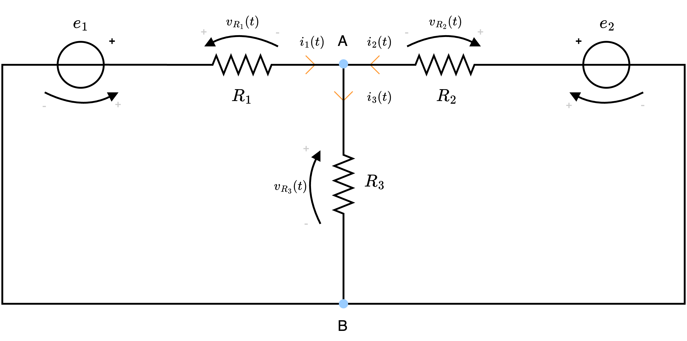
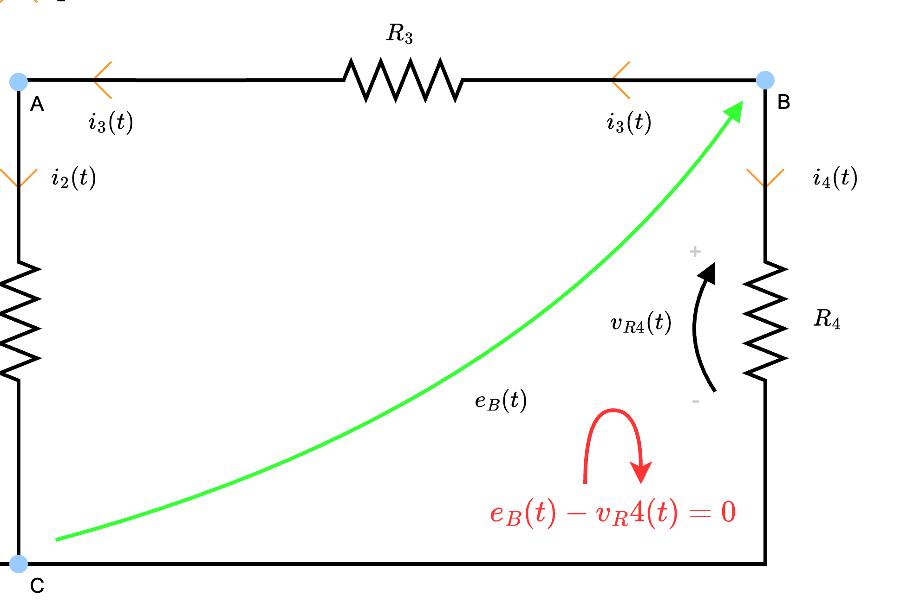
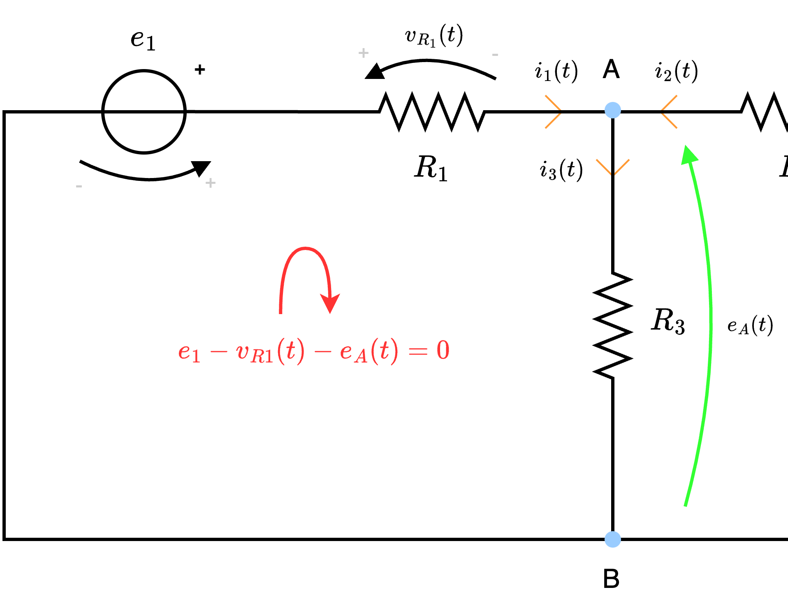

Definizione - Corrige denominazione circuito
Al fine di rendere più scorrevole la lettura, si riprendono alcuni termini:
- i rami, ovvero i componenti con i loro terminali;
- i nodi, ovvero dei punti di congiunzione di due o più rami. È da notare, tuttavia, che per l'analisi dei circuiti risulta abbastanza inutile considerare i congiungimenti di soli 2 rami: per questo motivo, da questo momento, si considereranno nodi solo i congiungimenti di 3 o più rami;
- le maglie, ovvero un percorso chiuso formato dai rami;
- i lati, ovvero i collegamenti in serie di rami. È da notare che anche un singolo componente forma un lato.
Definizione - Risoluzione di un circuito
Risolvere un circuito significa calcolare tutte le correnti \( i\) e le tensioni \( v\) dei lati. Quindi, dato un numero \( L\) di lati, si hanno \( 2 \cdot L\) incognite. Ciò significa che occorre un sistema di \( 2 \cdot L\) equazioni indipendenti.
Dato che ogni lato è caratterizzato da un'equazione costitutiva, si hanno \( L\) equazioni indipendenti. Per le rimanenti, è possibile utilizzare le equazioni topologiche (ndr, le leggi di Kirchhoff): in particolare utilizzando LKC e dati \( N\) nodi, si hanno solo \( N - 1\) equazioni indipendenti (dimostrabile con la teoria dei grafi e verificabile sommando \( N - 1\) equazioni tra di loro e ottenendo esattamente la rimanente, evidenziando quindi la dipendenza). Considerando invece LKT, si ha che occorrono \( \overbrace{2 \cdot L - L - (N - 1)}^{L - N + 1}\) equazioni indipendenti: è possibile ottenerle considerando solo le maglie senza altre maglie all'interno, dette anelli (ndr, si ha che sono indipendenti perchè selezionando solo gli anelli si ha almeno una tensione differente per equazione. È possibile inoltre dimostrare, grazie alla teoria dei grafi, che sono esattamente \( L - N + 1\) equazioni).
Dato che ogni lato è caratterizzato da un'equazione costitutiva, si hanno \( L\) equazioni indipendenti. Per le rimanenti, è possibile utilizzare le equazioni topologiche (ndr, le leggi di Kirchhoff): in particolare utilizzando LKC e dati \( N\) nodi, si hanno solo \( N - 1\) equazioni indipendenti (dimostrabile con la teoria dei grafi e verificabile sommando \( N - 1\) equazioni tra di loro e ottenendo esattamente la rimanente, evidenziando quindi la dipendenza). Considerando invece LKT, si ha che occorrono \( \overbrace{2 \cdot L - L - (N - 1)}^{L - N + 1}\) equazioni indipendenti: è possibile ottenerle considerando solo le maglie senza altre maglie all'interno, dette anelli (ndr, si ha che sono indipendenti perchè selezionando solo gli anelli si ha almeno una tensione differente per equazione. È possibile inoltre dimostrare, grazie alla teoria dei grafi, che sono esattamente \( L - N + 1\) equazioni).
Esempio - Risoluzione di un circuito
Considerando il seguente circuito  si ha che è possibile identificare 3 nodi e 5 lati
si ha che è possibile identificare 3 nodi e 5 lati  Come è stato detto, occorrono 10 (da \( 2 \cdot 5\) lati) equazioni per risolverlo.
Come è stato detto, occorrono 10 (da \( 2 \cdot 5\) lati) equazioni per risolverlo.
Orientando quindi il circuito si ottiene È quindi possibile applicare LKC identificando 3 nodi (A, B e C)
È quindi possibile applicare LKC identificando 3 nodi (A, B e C)
Applicando ora LKT
Orientando quindi il circuito si ottiene
da cui è possibile ottenere le seguenti equazioni: \[ \begin{array}{llcl} A: & i_1 - i_2 - i_3 & = & 0 \\ B: & i_3 - i_4 - i_5 & = & 0 \\ C: & - i_1 + i_2 + i_4 + i_5 & = & 0 \end{array} \] È possibile notare tuttavia che si hanno solo 2 equazioni indipendenti, dato che (ad esempio) sommando \( A\) e \( B\) otteniamo esattamente \( C\) \[ \overbrace{(i_1 - i_2 - i_3)}^A + \overbrace{(i_3 - i_4 - i_5)}^B = - \overbrace{(i_1 - i_2 - i_4 - i_5)}^C \] Si hanno quindi solo \( N - 1\) equazioni indipendenti.
Applicando ora LKT
è possibile identificare 3 anelli (\( M_1\), \( M_2\) e \( M_3\)) le cui equazioni sono \[ \begin{array}{llcl} M_1: & v_1 - v_2 & = & 0 \\ M_2: & v_2 - v_3 - v_4 & = & 0 \\ M_3: & v_4 - v_5 & = & 0 \end{array} \] Si hanno quindi esattamente \( L - N + 1\) (\( 5 - 3 + 1 = 3\)) equazioni.
Definizione - Metodo di risoluzione algebrico (o di Tableu)
Una possibile strategia risolutiva è il metodo algebrico (o di Tableu) che consiste di diversi passaggi.
Dato un circuito, infatti, è necessario:
Dato un circuito, infatti, è necessario:
- identificare i nodi e i lati;
- orientare il circuito e identificare le \( 2 \cdot L\) incognite;
- scrivere le \( L\) equazioni costitutive dei lati;
- scegliere rispettivamente \( N - 1\) nodi a cui applicare \( LKC\) e \( L - N + 1\) anelli a cui applicare LKT per trovare le equazioni topologiche;
- ottenute le \( 2 \cdot L\) equazioni, risolvere il sistema.
Esempio - Risoluzione di un circuito utilizzando il metodo algebrico
Considerando il seguente circuito  risolverlo utilizzando il metodo di Tableu.
risolverlo utilizzando il metodo di Tableu.  e identifichiamo le incognite \( i_1(t)\), \( i_2(t)\), \( i_3(t)\) e \( v_1(t)\), \( v_2(t)\), \( v_3(t)\).
e identifichiamo le incognite \( i_1(t)\), \( i_2(t)\), \( i_3(t)\) e \( v_1(t)\), \( v_2(t)\), \( v_3(t)\).
Identificazione di nodi e lati
Per prima cosa, identifichiamo i nodi e i latiOrientamento circuito
Utilizzando anche il verso del generatore, orientiamo il circuito
Equazioni costitutive
Al fine di ottenere le equazioni costitutive di ogni lato identifichiamo la tensione e la corrente di ogni lato. È quindi possibile dire che, applicando LKT \[ \begin{array}{llcl} \text{Lato 1}: & v_1(t) & = & e_1 - v_{R1}(t) \\ \text{Lato 2}: & v_2(t) & = & e_2 - v_{R2}(t) \\ \text{Lato 3}: & v_3(t) & = & v_{R3}(t) \end{array} \] È necessario tuttavia considerare che necessitiamo di queste equazioni in funzione delle incognite. Considerando ora la legge di Ohm, si ha che è possibile scrivere le tensioni delle resistenze come \( v_{R}(t) = R \cdot i_R(t)\), ovvero \[ \begin{array}{llcl} \text{Lato 1}: & v_1(t) & = & e_1 - R_1 \cdot i_1(t) \\ \text{Lato 2}: & v_2(t) & = & e_2 - R_2 \cdot i_2(t) \\ \text{Lato 3}: & v_3(t) & = & R_3(t) \cdot i_3(t) \end{array} \]
Equazioni topologiche
Considerando ora gli \( N\) nodi individuati (che sono 2), occorre sceglierne \( N - 1\) (quindi 1) per applicare LKC: scegliamo quindi A e otteniamo \[ \begin{array}{llcl} A: & i_1(t) + i_2(t) - i_3(t) & = & 0 \end{array} \] e occorre individuare gli \( L - N + 1\) (\( 3 - 2 + 1 = 2\)) anelli a cui applicare LKT. Otteniamo quindi \[ \begin{array}{llcl} M_1: & v_1(t) - v_3(t) & = & 0 \\ M_2: & -v_2(t) + v_3(t) & = & 0 \end{array} \quad \implies \quad \begin{array}{llcl} M_1: & v_1(t) & = & v_3(t) \\ M_2: & v_2(t) & = & v_3(t) \end{array} \]
Risoluzione sistema
Abbiamo quindi ottenuto le \( 2 \cdot L\) equazioni che è possibile porre a sistema, ottenendo \[ \left\{ \begin{array}{lrcl} \text{Lato 1}: & v_1(t) & = & e_1 - R_1 \cdot i_1(t) \\ \text{Lato 2}: & v_2(t) & = & e_2 - R_2 \cdot i_2(t) \\ \text{Lato 3}: & v_3(t) & = & R_3 \cdot i_3(t) \\ A: & i_1(t) + i_2(t) - i_3(t) & = & 0 \\ M_1: & v_1(t) & = & v_3(t) \\ M_2: & v_2(t) & = & v_3(t) \end{array} \right. \] Ora, considerando le equazioni \( M_1\) e \( M_2\) per cui \[ v_1(t) = v_2(t) = v_3(t) \] e la relazione "Lato 3" per cui \[ v_3(t) = R_3 \cdot i_3(t) \] è possibile riscrivere il sistema come \[ \left\{ \begin{array}{lcl} R_3 \cdot i_3(t) & = & e_1 - R_1 \cdot i_1(t) \\ R_3 \cdot i_3(t) & = & e_2 - R_2 \cdot i_2(t) \\ i_1(t) + i_2(t) - i_3(t) & = & 0 \end{array} \right. \] È ora sufficiente risolvere il sistema per ottenere i valori delle correnti \( i_1\), \( i_2\) e \( i_3\) e sostituire poi ad una qualsiasi delle equazioni costitutive per ottenere il valore della tensione.Definizione - Metodo di risoluzione dei potenziali di nodo
Una possibile strategia risolutiva è il metodo dei potenziali di nodo che consiste di diversi passaggi.
Dato un circuito, infatti, è necessario:
Dato un circuito, infatti, è necessario:
- identificare i nodi e scegliere un nodo di riferimento (che sarà messo a "terra", ovvero avrà potenziale nullo);
- identificare per ogni altro nodo, la differenza di potenziale rispetto al riferimento;
- applicare LKC ai nodi di non riferimento;
- scrivere le equazioni LKC in funzione dei potenziali di nodo precedentemente identificati;
- risolvere il sistema ottenuto.
Esempio - Risoluzione di un circuito utilizzando il metodo dei potenziali di nodo - Esempio 1
Considerando il seguente circuito  e scegliamo il nodo C come riferimento.
e scegliamo il nodo C come riferimento.  e otteniamo le tensioni \( e_A(t)\) ed \( e_B(t)\).
e otteniamo le tensioni \( e_A(t)\) ed \( e_B(t)\).  ottenendo quindi le equazioni: \[ \begin{array}{llcl} A: & i_1(t) - i_2(t) - i_3(t) - I & = & 0 \\ B: & I + i_3(t) - i_4(t) & = & 0 \end{array} \]
ottenendo quindi le equazioni: \[ \begin{array}{llcl} A: & i_1(t) - i_2(t) - i_3(t) - I & = & 0 \\ B: & I + i_3(t) - i_4(t) & = & 0 \end{array} \]
risolverlo utilizzando il metodo dei potenziali di nodo.
Identificazione dei nodi e scelta del nodo di riferimento
Per prima cosa, identifichiamo i nodi del circuitoIdentificazione delle tensioni rispetto al riferimento
Assegniamo quindi le tensioni agli altri nodi rispetto al nodo di riferimentoApplicazione di LKC ai nodi di non riferimento
Al fine di applicare LKC ai nodi di non riferimento, identifichiamo tutte le correnti del circuitoScrivere le equazioni LKC in funzione dei potenziali di nodo
Dato ciò, al fine di riscrivere le equazioni LKC in funzione dei potenziali di nodo, occorre ragionare nel seguente modo:- la corrente \( i_1(t)\), per la legge di Ohm, è dipendente dalla resistenza \( R_1\): è quindi possibile calcolarla come \[ i_1(t) = \; {}^{v_{R1}(t)} /_{R_1\;} \] Ora, per calcolare \( v_{R1}(t)\) è possibile considerare di applicare LKT alla maglia "virtuale" ottenendo quindi \[ i_1(t) = \frac{\overbrace{E_1 - e_A(t)}^{v_{R1}(t)}}{R_1} \]
- la corrente \( i_2(t)\), per la legge di Ohm, è dipendente dalla resistenza \( R_2\): è quindi possibile calcolarla come \[ i_2(t) = \; {}^{v_{R2}(t)} /_{R_2\;} \] Ora, per calcolare \( v_{R2}(t)\) è possibile considerare di applicare LKT alla maglia "virtuale" ottenendo \[ i_2(t) = \frac{\overbrace{e_A(t)}^{v_{R2}(t)}}{R_2} \]

- la corrente \( i_3(t)\), per la legge di Ohm, è dipendente dalla resistenza \( R_3\): è quindi possibile calcolarla come \[ i_3(t) = \; {}^{v_{R3}(t)} /_{R_3\;} \] Ora, per calcolare \( v_{R3}(t)\) è possibile applicare LKT alla maglia "virtuale" ottenendo \[ i_3(t) = \frac{\overbrace{e_B(t) - e_A(t)}^{v_{R3}(t)}}{R_3} \]
- la corrente \( i_4(t)\), per la legge di Ohm, è dipendente dalla resistenza \( R_4\): è quindi possibile calcolarla come \[ i_4(t) = \; {}^{v_{R4}(t)} /_{R_4\;} \] Ora, per calcolare \( v_{R4}(t)\) è possibile applicare LKT alla maglia "virtuale" ottenendo \[ i_4(t) = \frac{\overbrace{e_B}^{v_{R4}(t)}}{R_4} \]
Risoluzione sistema
È ora sufficiente risolvere il sistema lineare \[ \left\{ \begin{array}{lcl} \frac{e_1(t) - e_A(t)}{R_1} - \frac{e_A(t)}{R_2} - \frac{e_A(t) - e_B(t)}{R_3} - I & = & 0 \\ I + \frac{e_A(t) - e_B(t)}{R_3} - \frac{e_B(t)}{R_4} & = & 0 \end{array} \right. \] per risolvere il circuito.Esempio - Risoluzione di un circuito utilizzando il metodo dei potenziali di nodo - Esempio 2
Considerando il seguente circuito risolverlo utilizzando il metodo dei potenziali di nodo.  e scegliamo il nodo B come riferimento.
e scegliamo il nodo B come riferimento.  ottenendo quindi l'equazione: \[ A: \quad i_1(t) + i_2(t) - i_3(t) = 0 \]
ottenendo quindi l'equazione: \[ A: \quad i_1(t) + i_2(t) - i_3(t) = 0 \]
Identificazione dei nodi e scelta del nodo di riferimento
Per prima cosa, identifichiamo i nodi del circuitoIdentificazione delle tensioni rispetto al riferimento
Assegniamo quindi le tensioni agli altri nodi rispetto al nodo di riferimento e otteniamo la tensione \( e_A(t)\).
Applicazione di LKC ai nodi di non riferimento
Al fine di applicare LKC al nodo di non riferimento, identifichiamo tutte le correnti del circuitoScrivere le equazioni LKC in funzione dei potenziali di nodo
Dato ciò, al fine di riscrivere le equazioni LKC in funzione dei potenziali di nodo, occorre ragionare nel seguente modo:- la corrente \( i_1(t)\), per la legge di Ohm, è dipendente dalla resistenza \( R_1\): è quindi possibile calcolarla come \[ i_1(t) = \frac{v_{R1}(t)}{R_1} \] Ora, per calcolare \( v_{R1}(t)\) è possibile applicare LKT alla maglia "virtuale" ottenendo \[ i_1(t) = \frac{\overbrace{e_1 - e_A(t)}^{v_{R1}(t)}}{R_1} \]
- la corrente \( i_2(t)\), per la legge di Ohm, è dipendente dalla resistenza \( R_2\): è quindi possibile calcolarla come \[ i_2(t) = \frac{v_{R2}(t)}{R_2} \] Ora, per calcolare \( v_{R2}(t)\) è possibile applicare LKT alla maglia "virtuale" ottenendo \[ i_2(t) = \frac{\overbrace{e_2 - e_A(t)}^{v_{R2}(t)}}{R_2} \]

- la corrente \( i_3(t)\), per la legge di Ohm, è dipendente dalla resistenza \( R_3\): è quindi possibile calcolarla come \[ i_3(t) = \frac{v_{R3}(t)}{R_3} \] Ora, per calcolare \( v_{R3}(t)\) è possibile considerare che è esattamente la tensione \( e_A(t)\) ottenendo \[ i_3(t) = \frac{\overbrace{e_A(t)}^{v_{R3}(t)}}{R_3} \]